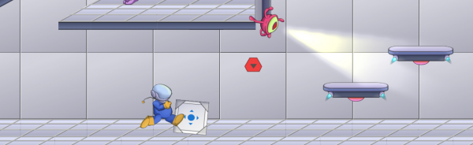
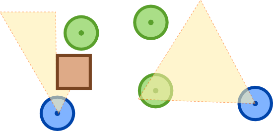
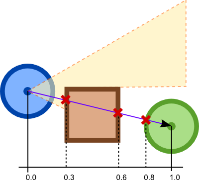
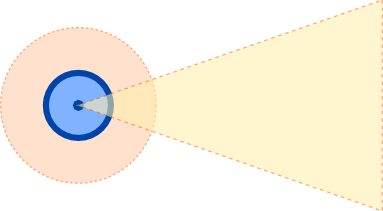

2D vision system with Ashley and Box2D
Jan 30, 2016 · CommentsGames development

In Sloppynauts the player had to remain undetected, avoiding CCTV cameras and alien baddies. We constantly had to determine who could see who and whether the player was hidden behind something. We wrote a nice reusable system using Ashley and Box2D and I think it"d be a shame if it went to waste. So here it is in case you"d like to use it.
This 2D vision system is generic enough to work with both side-scrolling and top-down games. Surely it can be further optimised and tailored to your needs… Hey, it was done for a game jam! Nevertheless, it could be a decent starting point!
Before we get down to business, make sure you understand what Ashley is and what component based entity systems are all about.
Vision System concepts
We want to give some of the entities in our game world the ability to see other entities. Both observers and observables will necessarily have a location in our game world. However, we need some extra information about our observers, specifically the area they can cover at any given point in time, ie. their field of view. In the diagram below you can see a couple of observers and three observables. One of the observables can be seen, the second one is complete outside of both FOVs whilst the third one is hidden behind a box.  We simply want to ask our system: “can this entity see this other entity?"
Observable and Observer components
Our Observable component is pretty trivial, it simply has a position.
public class ObservableComponent implements Component {
public Vector2 position = new Vector2();
}
The Observer component has a little more information.
public class ObserverComponent implements Component {
public Vector2 position = new Vector2();
public float angle = 0.0f;
public float distance = 5.0f;
public float fovAngle = 45.0f;
}
angle: where the entity is looking at.distance: how far it can see.fovAngle: the angle it can cover. Members are initialised with default values, you can obviously change these.
###The Vision Entity System
The VisionSystem is where the magic happens, you can see the full outline below.
public class VisionSystem extends IteratingSystem implements EntityListener {
public VisionSystem(World world) {}
public boolean canSee(Entity observer, Entity observable) {}
// EntitySystem
public void addedToEngine(Engine engine) {}
public void removedFromEngine(Engine engine) {}
// EntityListener
public void entityAdded(Entity entity) {}
public void entityRemoved(Entity entity) {}
// IteratingSystem
protected void processEntity(Entity observer, float deltaTime) {}
// Utility
private void updateVision(Entity observer) {}
private void updateVision(Entity observer, Entity observable) {}
private boolean inFov(Entity entity, Entity target) {}
private void raycast(Entity entity, Entity target) {}
private void addToVision(Entity observer, Entity observable) {}
private void removeFromVision(Entity observer, Entity observable) {}
}
The constructor will take a Box2D World as we need it to make line of sight (LoS) queries. We will also tell Ashley that we want the system to process entities with ObserverComponent.
public VisionSystem(World world) {
super(Family.all(ObserverComponent.class).get());
this.world = world;
}
In order to be able to answer the canSee() question, we will keep a map of observer entities to the collection of observables that it can see at any given time. The map will be updated every frame.
private ObjectMap<Entity, ObjectSet<Entity>> vision = new ObjectMap();
We will also need the collection of entities with an ObservableComponent, they are the candidates to make into the vision map as targets.
private ImmutableArray<Entity> observables;
The addedToEngine() and removedFromEngine() methods are invoked whenever we register the system with the engine. We can hook into them to grab the immutable list of observables as well as to register our vision system as a listener for observers. That way, we can pre-populate and clear up our vision map as observers come and go.
@Override
public void addedToEngine(Engine engine) {
super.addedToEngine(engine);
observables = engine.getEntitiesFor(
Family.all(ObservableComponent.class).get()
);
engine.addEntityListener(getFamily(), this);
}
@Override
public void removedFromEngine(Engine engine) {
super.removedFromEngine(engine);
engine.removeEntityListener(this);
}
@Override
public void entityAdded(Entity entity) {
vision.put(entity, new ObjectSet<Entity>());
}
@Override
public void entityRemoved(Entity entity) {
vision.remove(entity);
}
The canSee() method is quite trivial, we simply check if the observable is in the set of visible entities for the given observer.
public boolean canSee(Entity observer, Entity observable) {
ObjectSet<Entity> observables = vision.get(observer);
if (observables == null) {
return false;
}
return observables.contains(observable);
}
VisionSystem is an IteratingSystem, so we need to implement the processEntity() method, which will be invoked once a frame for every observer registered with the engine. Here is where the vision map entry for the observer gets updated.
@Override
protected void processEntity(Entity observer, float deltaTime) {
updateVision(observer);
}
In order to do that, we go through the collection of observables and check whether they should be added or removed from the observer's visible entities.
private void updateVision(Entity observer) {
for (Entity observable : observables) {
updateVision(observer, observable);
}
}
The addToVision() and removeFromVision() utility methods will simply help us update the vision map. We make the assumption that there will always be an entry for every observer in the engine.
private void addToVision(Entity observer, Entity observable) {
vision.get(observer).add(observable)
}
private void removeFromVision(Entity observer, Entity observable) {
vision.get(observer).remove(observable)
}
To know whether an observer can see an observable two conditions need to be met: the observable has to be within the observer's FoV and there must be an unobstructed LoS between the two. Querying the Box2D world can be costly, that is why we short-circuit the FoV check with the raycast.
private void updateVision(Entity observer, Entity observable) {
if (!inFov(observer, observable)) {
removeFromVision(observer, observable);
return;
}
raycast(observer, observable);
}
To achieve super-fast component retrieval, we use ComponentMapper.
private ComponentMapper<ObservableComponent> observableMapper = ComponentMapper.getFor(ObservableComponent.class);
private ComponentMapper<ObserverComponent> observerMapper = ComponentMapper.getFor(ObserverComponent.class);
First, check whether the observable is within the vision distance of the observer and if it is, we check whether or not the angle between the two falls within the observer's vision angle. The math is be pretty simple here.
private boolean inFov(Entity entity, Entity target) {
ObserverComponent observer = observerMapper.get(entity);
ObservableComponent observable = observableMapper.get(target);
if (observer.position.isZero() ||
observable.position.isZero() ||
observer.position.dst2(observable.position) >
observer.distance * observer.distance) {
return false;
}
toObservable.set(observable.position);
toObservable.sub(observer.position);
float toObservableAngle = toObservable.angle();
float angleDifference = Math.abs(toObservableAngle - observer.angle);
angleDifference = Math.min(angleDifference, 360.0f - angleDifference);
if (angleDifference > observer.fovAngle) {
return false;
}
return true;
}
It's time to perform our raycast, which will go from the observer to the observable. Box2D raycasts take a reference to the Callback interface to handle geometry hits. The handler is notified on every fixture hit. Box2D will pass the fixture it encountered as well as the fraction along the segment at which the hit happened.  The VisionSystem has an inner VisionCallback implementation, which gets reused for every raycast, that way we don't need to constantly allocate memory.
private VisionCallback callback = new VisionCallback();
Its outline is pretty simple.
private class VisionCallback implements RayCastCallback {
private Entity observer;
private Entity observable;
private float minFraction;
private float observableFraction;
public void prepare(Entity observer, Entity observable) {}
public boolean canSee() {}
@Override
public float reportRayFixture(Fixture fixture, Vector2 point, Vector2 normal, float fraction) {}
}
Before the raycast, we need to prepare the callback.
public void prepare(Entity observer, Entity observable) {
this.observer = observer;
this.observable = observable;
this.minFraction = Float.MAX_VALUE;
this.observableFraction = Float.MAX_VALUE;
}
Whenever the ray hits a fixture, the reportRayFixture() method gets called. Box2D bodies can hold arbitrary data, i.e. a reference to any Object. We conveniently set this to be a referene to the Entity the body belongs to. That way we can check if the fixture we hit is part of the observer itself. Whenever we encounter the observable we record how far along the ray segment it is.
@Override
public float reportRayFixture(Fixture fixture, Vector2 point, Vector2 normal, float fraction) {
Object data = fixture.getBody().getUserData();
if (data == observer) {
return -1;
}
minFraction = fraction;
if (data == observable) {
observableFraction = fraction;
return fraction;
}
return 0;
}
Thanks to the information recorded during the raycast, we can then ask VisionCallback whether the object is visible. This question is easy to answer, it will be visible if and only if the observable was the closest object the ray bumped into.
public boolean canSee() {
return observableFraction < 1.0f && observableFraction <= minFraction;
}
The system raycast() method becomes very simple and can easily update the vision map.
private void raycast(Entity entity, Entity target) {
ObserverComponent observer = observerMapper.get(entity);
ObservableComponent observable = observableMapper.get(target);
callback.prepare(entity, target);
world.rayCast(
callback,
observer.position,
observable.position
);
if (callback.canSee()) {
addToVision(entity, target);
}
else {
removeFromVision(entity, target);
}
}
That's it, we have a nice, reusable vision system for any 2D game!
Room for improvement
Like I said, this is game jam code, you have been warned! Here's a few things I could think of to make the system more efficient and nicer in general.
- Collision filtering: Box2D allows us to set bit masks to bodies to filter collisions. We can leverage that to select behind which bodies observables can hide.
- Space partitioning: we can use a quadtree to avoid processing every observable for each observer.
- Deferred raycasting: we probably don't need one frame accuracy, so we can update the vision maps for a subset of observers each frame. The player won't ever notice if that guard spotted him a couple of frames later.
- Prioritisation: if you ever find yourself in a situation where there are just too many observables and observers you can add some sort of prioritisation to your deferred raycast queue, so the important ones get processed first. You may also have to keep track of the time spent in the queue to avoid starvation.
Some games may need slightly more complex vision models. For instance, you may add a small detection circle around observers to represent some kind of sixth sense. A guard would notice a presence right behind him after a short while. That would be quite easy to add to our VisionSystem.

Use it, improve it, give feedback
Find the full source for the vision system here:
Let me know what you think, especially if you use it. Would love some feedback on it!